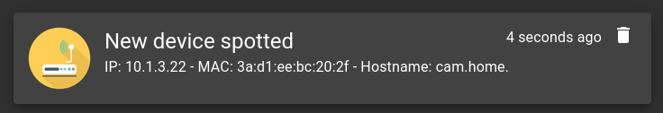

OPN-Arp
OPN-Arp on OPNSense allows you to send alerts when new devices are spotted on the network.

Setup
- Install the
opn-arpplugin via the community repo - Enable OPN-Arp under Services > OPN-Arp
- Enable Monit under Services > Monit
- Add a new entry under Service Tests Settings:
- Name:
MAC pair - Condition:
content = "MAC pair" - Action:
Alertfor an email alert orExecuteand/root/gotify.shfor gotify (script below)
- Name:
- Add a new entry under Service Settings:
- Name:
MAC_PAIR - Type:
File - Path:
/var/log/system/latest.log - Tests:
MAC Pair
- Name:
- Add a new entry under Alert Settings: (only for email alerts)
- Recipient:
your@email.com - Mail Format:
From: your@email.com
- Recipient:
- Fill the mail server details under general (only for email alerts)
Gotify Alerts
- Connect to OPNSense via SSH
- Execute
touch /root/gotify.sh && chmod +x /root/gotify.sh - Paste the following script into
/root/gotify.sh:#!/usr/local/bin/bash if [[ $MONIT_DESCRIPTION =~ "MAC pair" ]]; then ip=$(echo $MONIT_DESCRIPTION | cut -d '(' -f 2 | cut -d ')' -f 1) mac=$(echo $MONIT_DESCRIPTION | cut -d '(' -f 2 | cut -d ')' -f 2) host=$(host $ip | cut -d ' ' -f 5) title="New device spotted" msg="IP: $ip - MAC: $mac - Hostname: $host" else title=$MONIT_SERVICE msg=$MONIT_DESCRIPTION fi curl -X POST "https://gotify.domain.com/message?token=yourtoken" -F "title=$title" -F "message=$msg"
- Edit
gotify.domain.comandyourtokenaccordingly - Create a file under
/usr/local/etc/rc.syshook.d/start/99-opnarp:#!/bin/sh chmod +x /usr/local/etc/rc.d/opnarp
-
Test it by running:
echo "<29>1 2022-08-29T20:16:44+03:00 router.home root 59285 - [meta sequenceId=1] New IPv4/MAC pair seen: (10.1.3.22)3a:d1:ee:bc:20:2f" >> /var/log/system/latest.log